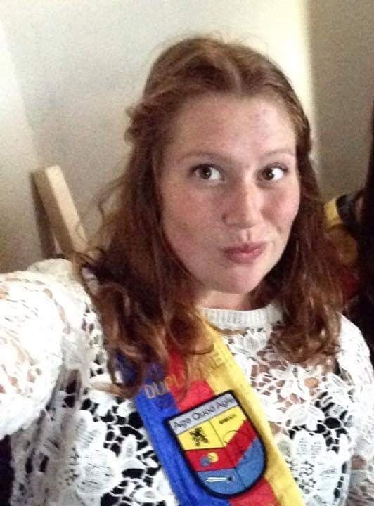
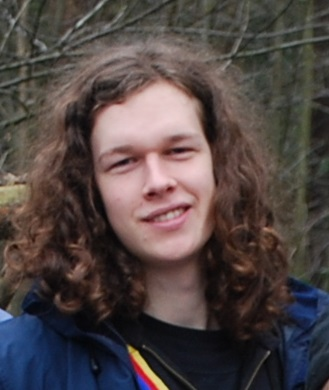

2014 - 2015
Onze allereerste Bacchus was Marjolein. Als enige vrouw is ze de strijd aangegaan en potverdekke wat voor één. Met veel trots heeft ze haar lint gedragen tot er het jaar nadien een praesidiumlint over mocht komen, namelijk met de functie Feest. Topgriet!
2015 - 2016
Deze hardcore metalfan was onze tweede Bacchus. Buiten een metalfan is hij best een goede kok. Hij had namelijk alle schachtenpapjes gemaakt voor het doopjaar 2017-2018. Helaas is dit momenteel de enigste Bacchus dat niet in het praesidium zat.
2016 - 2017

Kenny was onze derde Bacchus. Met zijn groot hart wilde hij zijn plaats zelfs nog afstaan maar verdient gewonnen heeft hij zeker. Deze teddybeer van 130 kilo zal de strijd zeker aangaan en dan is het om te winnen hoor!
2017 - 2018

Bert is Bacchus nummer vier, maar helaas binnenkort niet meer. Peertje: *freezes frame* Ja, ik weet ook niet hoe ik hier beland ben. "but let's just roll with it".
2018 - 2019

Ons Valérie. Bacchus nummer vijf ondertussen. Na een zenuwslopende finaleronde is zij er in geslaagd om te winnen van het petekind van de vorige bacchus. we vroegen haar voor een statement en dit is alles dat er uit kwam: "Twas plezant, maar ik heb geen idee hoe ik dees gewonnen heb."